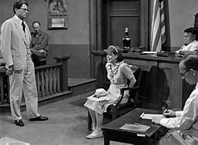
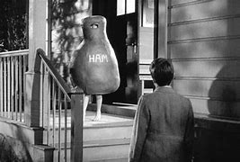
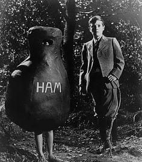
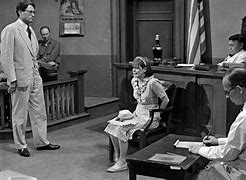
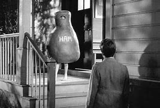
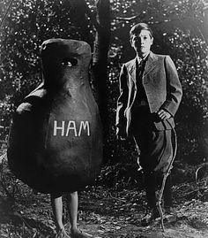
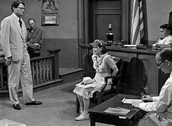
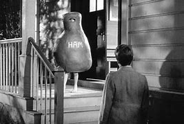
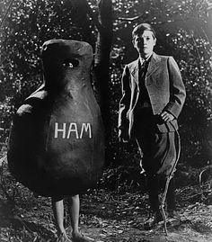

To Kill A Mockingbird Interactive Timeline
Created By Michael Laposta


 




sources for information



Scout, a young girl, shares her family's background with us. Her
father, Atticus Finch, is a lawyer based in Maycomb. After their
mother's passing, Scout and her brother Jem are brought up by
Calpurnia. The two siblings make friends with a boy called Dill,
who proposes a plan to entice Boo Radley, a secluded neighbor,
out of his home. Scout witnesses a shutter move, as if someone
were glancing out, when Dill persuades Jem to dash over and
touch Boo's house.
Scout eagerly attends school for the first time, but she and
her
teacher, Miss Caroline, do not get along. Jem invites the
poor
Walter Cunningham to lunch who douses his food in molasses,
shocking Scout to the point that Calpurnia scolds her for not
being a better hostess. Back at school, an incident involving
Burris Ewell, a boy from an even poorer and less respectable
family than the Cunninghams, disillusions Scout further. She
asks if Atticus could teach her instead, and though he
refuses,
he promises to keep reading to her.
When school breaks for the summer, Dill returns to Maycomb,
continuing his games with Scout and Jem and eventually
creating
one called “Boo Radley” that they suspend when Atticus
catches
them. As Jem and Dill grow closer, Scout spends time with
Miss
Maudie Atkinson, who tells Scout that the rumors about Boo
Radley are false. On Dill’s last day in Maycomb, Scout, Jem,
and
Dill peer through windows at the Radley Place. They rush home
after hearing a shotgun to find the neighborhood adults
talking
about how Mr. Nathan Radley shot at a Black man in his yard.
On Scout’s walks home from school with Jem, they find gifts
left
for them in a tree knothole. Maycomb endures a real winter,
allowing the children to build a snowman that looks so much
like
Mr. Avery that Atticus demands them to disguise it. That
night,
Scout is woken up to find that Miss Maudie’s house is on
fire,
and while outside someone drapes a blanket over her, which
they
later realize was Boo Radley’s doing. Jem reveals the whole
story of the knothole and the presents, and Atticus tells
them
to keep it to themselves.
Scout nearly starts a fight when a classmate uses a racial
slur
to declare that Atticus defends Black people, particularly
Tom
Robinson, who was accused of raping a white woman. Atticus
says
that Tom is innocent but doomed, since it’s inconceivable
that
an all-white jury would acquit him. One day, Atticus
surprises
Jem and Scout when he shoots a mad dog from a considerable
distance. Mrs. Dubose, a cantankerous old lady, tells the
children that Atticus is not any better than the people he
advocates for, causing Jem to lose his temper and destroy all
of
Mrs. Dubose’s camellia bushes. As punishment, Jem goes to her
house every day to read to her, and when she dies because of
her
morphine addiction, she leaves Jem a box with a single camellia.
Tom Robinson’s trial draws near, and Atticus’s role as his
defense lawyer subjects Jem and Scout to town gossip. Scout
gets
into a fight with Jem after he asks her not to antagonize
Alexandra, and when she goes to bed, she finds Dill hiding
underneath it. Sherriff Heck Tate appears at the Finch home
and
expresses concerns about the possibility of a lynch mob
arising
as Tom Robinson is being moved to the Maycomb jail. Atticus
sits
outside of the jail reading, and when a group of men threaten
Atticus to move, Scout intervenes.
People from all over the county make an appearance at the
trial,
except for Miss Maudie who does not approve of watching. Jem,
Scout, and Dill sneak into the courtroom and find seats in
the
balcony where Black people are required to sit. Bob Ewell
gives
his testimony, telling the court how he found Tom Robinson
raping his daughter Mayella, and Atticus asks why no doctor
was
called. Atticus has him write his name, pointing out that Bob
is
left-handed and that a left-handed man would be more likely
to
leave bruises on the right side of a girl’s face.
During Atticus’s fiery cross-examination of Mayella, Mayella
yells at the courtroom to convict Tom Robinson, eventually
crying and refusing to answer any more questions. Tom’s
testimony explains how he often would help Mayella with
chores,
and how on the night of the alleged rape, it was actually
Mayella who attempted to pursue Tom. When Bob appeared,
forcing
Tom to flee, Bob threatened to kill Mayella. Link Deas is
thrown
out of the courtroom when he defends Tom. Dill becomes so
upset
that Scout has to take him out of the courtroom.
As school starts, the shadow of the trial still hangs over
Scout. Bob Ewell, who loses his job, blames Atticus, and
begins
following Helen Robinson while whispering obscenities at her.
Aunt Alexandra believes Bob holds a grudge against everyone
connected with the trial. That Halloween, the town sponsors a
pageant at the school.
On their way home from the pageant, Scout and Jem are
attacked.
They struggle until suddenly the assailant is pulled away and
Scout stumbles home, seeing a man carrying Jem toward her
house.
Scout learns that Bob Ewell is lying dead under a tree and
she
realizes that the man who brought Jem home is Boo Radley.
Heck
Tate tells Atticus that though Boo is the one who stabbed
Bob,
Heck would rather have the whole affair hushed up to spare
Boo.
Scout walks Boo home, imagining the world from his perspective.